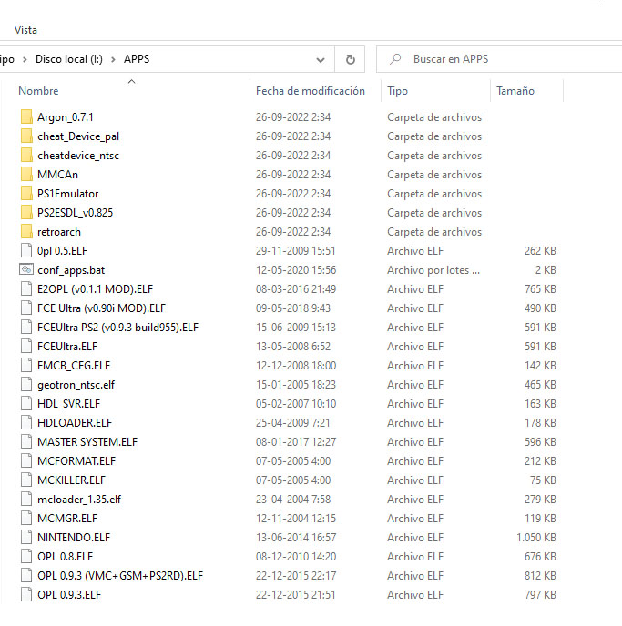
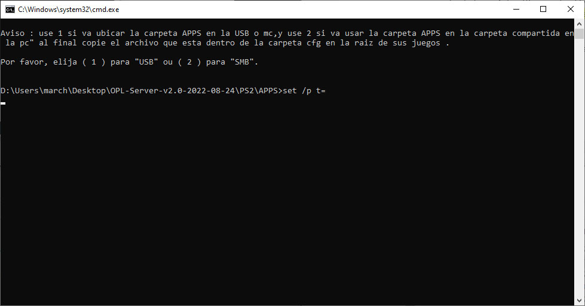

PS2 APPS en USB

Para esta Guia
Requisitos para este tutorial
- USB en formato FAT32
- Un sistema Windows 7 o superior
Para Empezar este Tutorial
- Conectamos nuestro USB a nuestro equipo o nuestra ruta de nuestro OPL Server
- Y buscamos nuestra carpeta APPS para poder pasarle nuestras aplicaciones o emulador a nuestra PS2
- Si no se encuentra la podemos crear de la siguiente forma crear carpeta con el nombre de
APPS - Una vez listo nuestra carpeta
- Para poder automatizar esto tenemos 3 formas
- La forma manual para automatizar 
- Creamos un nuevo documento de texto
- Lo renombramos con el siguiente nombre y extensión
conf_apps.cfg - Si no podemos editarlo podemos usar el boc de notas o el programa Notepad++
- Una vez dentro lo editamos de la siguiente forma para nuestra Aplicaciones
- Colocamos el nombre de la aplicación y después la ruta del archivo .elf ej:
OPL v0.8=mass:/APPS/ OPL 0.8.ELFo con carpetaRETROARCH=mass:/APPS/retroarch/raboot.elfy así en cada una de las aplicaciones que emos pasado - Si están en nuestra aplicación en la memory card cambiamos el mass por mc0 si en la memory 1 y la forma automática por si esta en la 1 o 2 seria ms?
- Guardamos los cambios de nuestro archivo .cfg
- La forma Automática con el archivo .bat 
- Pasamos el archivo
conf_apps.cfga nuestra carpeta APPS - Seleccionamos la forma de uso si es por USB seleccionamos 1, si es por OPL Server 2
- Una vez seleccionado nuestra opción le damos a enter
- Y esperamos a que procese los archivos una ves termina le damos a cualquier tecla para terminar
- Se nos creará una carpeta con el nombre de cfg dentro estará nuestro archivo
conf_apps.cfg - Método por carpeta, para las versiones oficial de la v.12.77 y superior (Método no probado)
- Copiamos el archivo title.cfg_maker.BAT a nuestra carpeta APPS y lo abrimos
- Creará una carpeta por cada aplicación .elf que pasamos a nuestro USB p OPL Server
- Una vez terminada
- Una vez creado el archivo lo colocamos en
- Si es USB lo dejamos en la raíz del USB
- Si es Server lo dejamos en la raíz del server
- Si no podemos acceder iniciamos uLaunchELf y vamos a mass:/ copiamos el archivo conf_apps.cfg con el
 Copy y lo pegamos en mc0:/OPL/ con paste y reiniciamos la consola
Copy y lo pegamos en mc0:/OPL/ con paste y reiniciamos la consola - En nuestro OPL hay un menú de Apps para nuestras aplicaciones
- a. Para acceder a este menú solo de damos a
 esta posicionarnos en el menú APPS
esta posicionarnos en el menú APPS - b. Y estaría listo

×